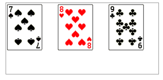

语法：
background ： [background-color] | [background-image] | [background-position][/background-size] | [background-repeat] | [background-attachment] | [background-clip] | [background-origin],...
可以把上面的缩写拆解成以下形式：
background-repeat : repeat1,repeat2,...,repeatN; backround-position : position1,position2,...,positionN; background-size : size1,size2,...,sizeN; background-attachment : attachment1,attachment2,...,attachmentN; background-clip : clip1,clip2,...,clipN; background-origin : origin1,origin2,...,originN; background-color : color;
说明：
注意：
（1）用逗号隔开每组 background 的缩写值；
（2）如果有 size 值，需要紧跟 position 并且用 "/" 隔开；
（3）如果有多个背景图片，而其他属性只有一个（例如 background-repeat 只有一个），表明所有背景图片应用该属性值。
（4）background-color 只能设置一个
使用方法：
兼容性：
- 浅绿 = 支持
- 红色 = 不支持
- 粉色 = 部分支持
| Values | IE | Firefox | Chrome | Safari | Opera | iOS Safari | Android Browser | Android Chrome |
|---|---|---|---|---|---|---|---|---|
| Basic Support | 6.0-8.0 | 2.0-3.6 | 4.0+ | 3.1-4.0 | 15.0+ | 3.2+ | 2.1+ | 18.0+ |
| 9.0+ | 4.0+ | 4.1+ |
事例：
div{
width: 300px;;
height: 140px;;
border: 1px solid #999;
background-image: url(images/3.jpg),/*图片的大小是74*95*/
url(images/4.jpg),
url(images/5.jpg);
background-position: left top, 100px 0, 200px 0;
background-repeat: no-repeat, no-repeat, no-repeat;
margin:0 0 20px 0;
}
